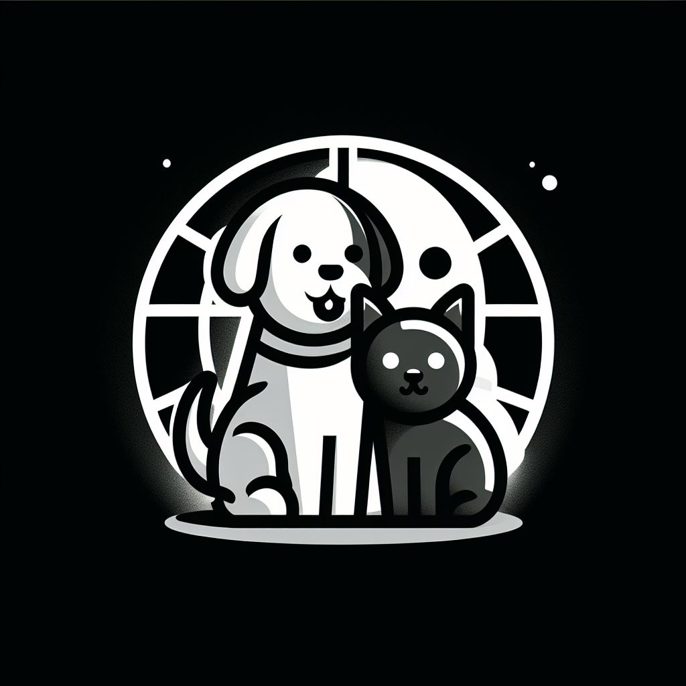

ONG - ayuda a un peludo
Bienvenido a esta ONG - Ayuda a un peludo
Creemos firmemente en la protección y el bienestar de todos los seres vivos.
Nos dedicamos apasionadamente a defender a los animales más vulnerables y a promover un mundo donde
todas las criaturas sean tratadas con compasión y respeto.
Somos una organización sin fines de lucro comprometida con la causa animal.
Desde nuestro inicio, hemos trabajado incansablemente para rescatar, rehabilitar y
encontrar hogares amorosos para animales en situación de abandono, maltrato o riesgo.